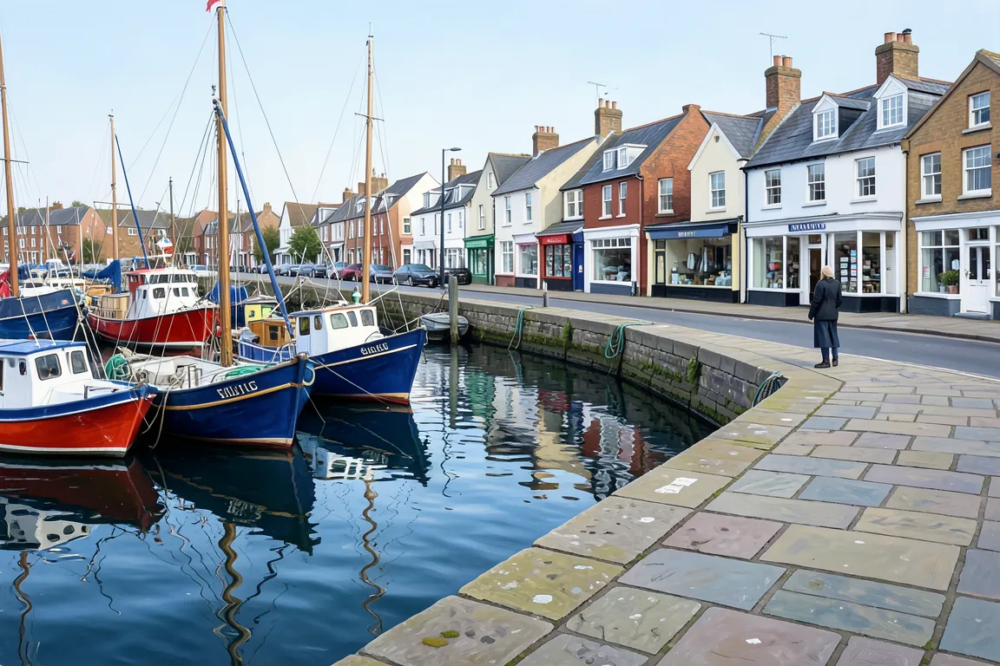

Paintings that copy a photograph in every detail: glass, chrome, signs and street reflections, in sharp, even focus. The hand is hidden and the picture is as cool as a camera.

Core thesis
A painting can match the camera: the artist works from a photograph, keeps its sharp focus and its flat modern light, and shows the city as the lens sees it.
Design principles
Work from a photograph, and transfer it by a grid or a projector, with an error of under 2%.
Keep the whole picture in sharp focus, with detail down to 1–2mm in the background.
Choose urban, banal subjects: a shop front, a car, a diner, a street, a sign, a window.
Paint reflections in glass and chrome, with 2–4 reflected scenes layered over the main view.
Hold an even, flat light with no drama, in a clear, high-key daylight.
Hide the brush: smooth, blended paint, with an airbrush or a fine brush for the gradients.
Show no comment on the subject, and keep the mood neutral and cool.